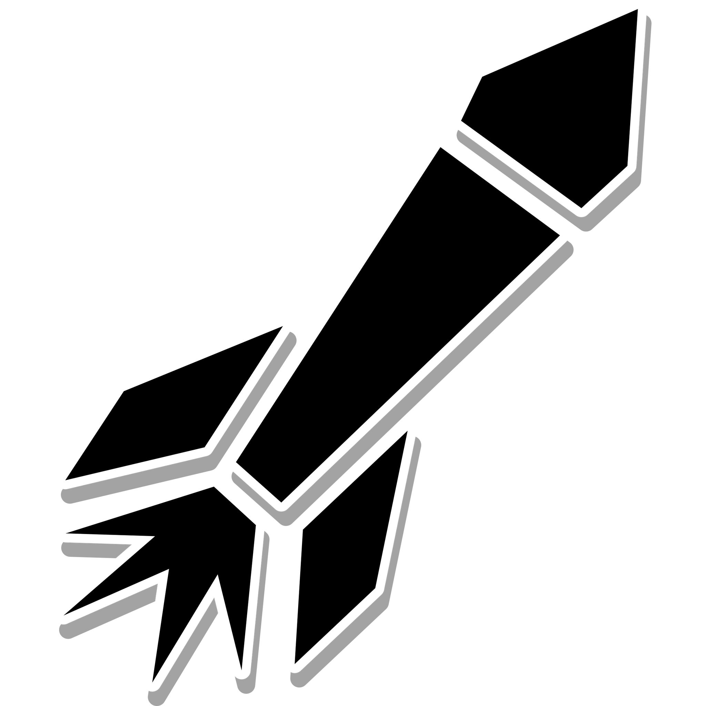

Unity Packages
ENTITY COMPONENT TREE
ENTITY COMPONENT TREE (ECT) IS AN ENTITY COMPONENT LIBRARY DESIGNED FOR THE UNITY GAME ENGINE.
UNLIKE TRADITIONAL MONOBEHAVIOURS, ECT OFFERS AN ADVANCED TREE-LIKE DATA STRUCTURE AND EFFORTLESS MULTITHREADING CAPABILITIES TO IMPROVE PERFORMANCE AND SCALABILITY OF GAME DEVELOPMENT.
ITS MODULAR AND FLEXIBLE ARCHITECTURE MAKES IT AN EXCELLENT CHOICE FOR PROJECTS OF ANY SIZE OR COMPLEXITY.

STINGER
STINGER IS AN INNOVATIVE AI TOOL DESIGNED TO ENHANCE THE MOVEMENT AND AWARENESS OF AGENTS IN VIRTUAL ENVIRONMENTS.
BY COMBINING NAV-MESHES FOR GROUND MOVEMENT AND A NAV-VOLUME FOR AIR MOVEMENT, STINGER ENABLES AGENTS TO TRANSITION SEAMLESSLY BETWEEN GROUND AND AIR, PROVIDING THEM WITH A WIDER RANGE OF MOBILITY OPTIONS.

Technical Artistry
AETHER
AETHER PROVIDES ATMOSPHERIC VOLUMETRIC FOG AND LIGHTING EFFECTS TO THE UNITY UNIVERSAL RENDER PIPELINE.
THIS PROJECT ALLOWS DEVELOPERS TO EASILY CREATE IMMERSIVE AND REALISTIC ATMOSPHERIC CONDITIONS IN THEIR GAMES, SUCH AS FOG, MIST, AND HAZE, WHICH CAN SIGNIFICANTLY ENHANCE THE OVERALL AESTHETIC OF A SCENE.